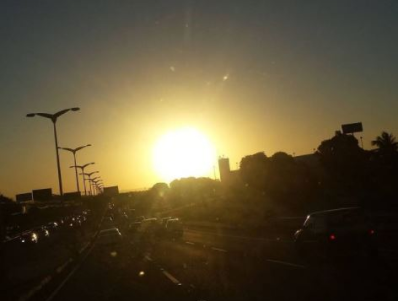

Felipe Xavier
29 anos
Fortaleza - CE
Sou um designer UI/UX e Desenvolvedor web, graduado em análise e Desenvolvimento de Sistemas pela Faculdade CDL, atuo projetando e codando sites, Obs só o front (por enquanto).
Messejana
Messejana é um distrito e bairro localizado na zona sudeste do município de Fortaleza, no estado do Ceará, Brasil. É um bairro rico em fatos históricos. Nele, nasceram o escritor José de Alencar, o arcebispo emérito de Olinda e Recife Dom Hélder Câmara[2] e o ex-presidente brasileiro Castello Branco.[3]

Veja historia completa
Coisas que amo
- Comer
- Codar
- Jogar
- Dormir
- Atividade fisica
- Cozinahr, amo cozinhar haha
- Praiazinha
- Ja falei dormir?!
Habilidades que tenho
- Divertido
- Dou bons conselhos
- Ajudo nos conflitos dos amigos e trabalho
- Ouvir as pessoas
- Sei cozinhar né hehe
- Bom em tomar decisões (no trabalho kk na vida pessoal é mais dificil)
- Me adapto bem a novos habitos
Meus defeitos
- As vezes da uma preguiça né
- Falta de foco, por exemplo os de estudo, começo a estudar no meio do fim sempre vou dando uma parada
- As vezes sou prestativo de mais
- Sou ruim em dizer não!
- não sou tão bom em organização de horário
- Deixar pra fazer depois, acontece bastante comigo
Coisas que ninguém sabe
- Sou tímido heuheu
- Amo muito esses barzinhos de esquina
- Só uso este Modelo de chinelo a 15 anos (é muito confortavel e discreto rs)